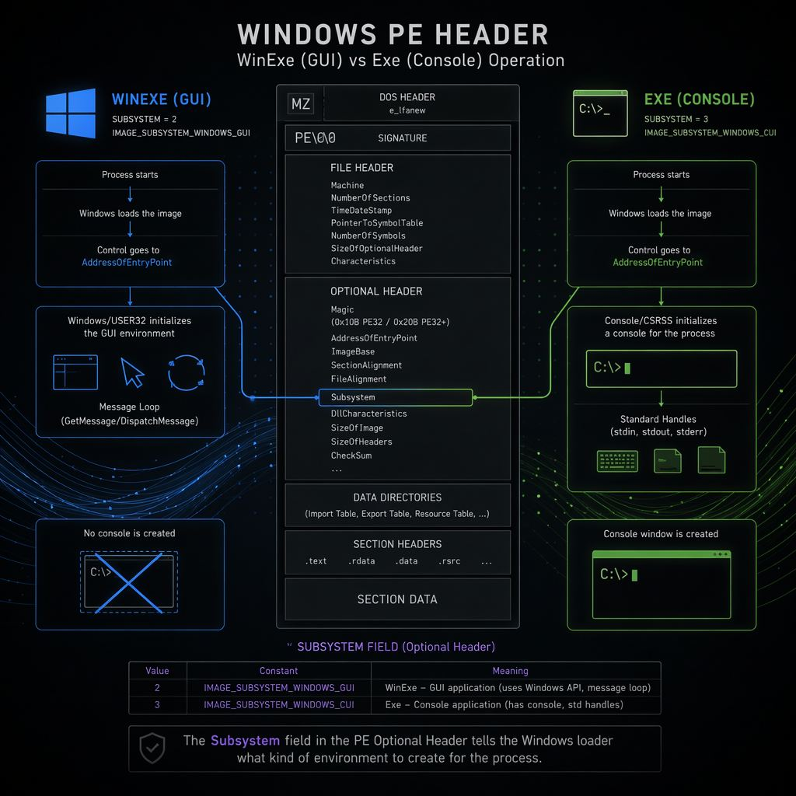
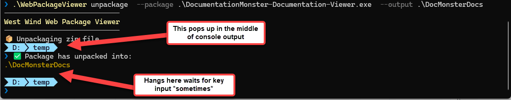
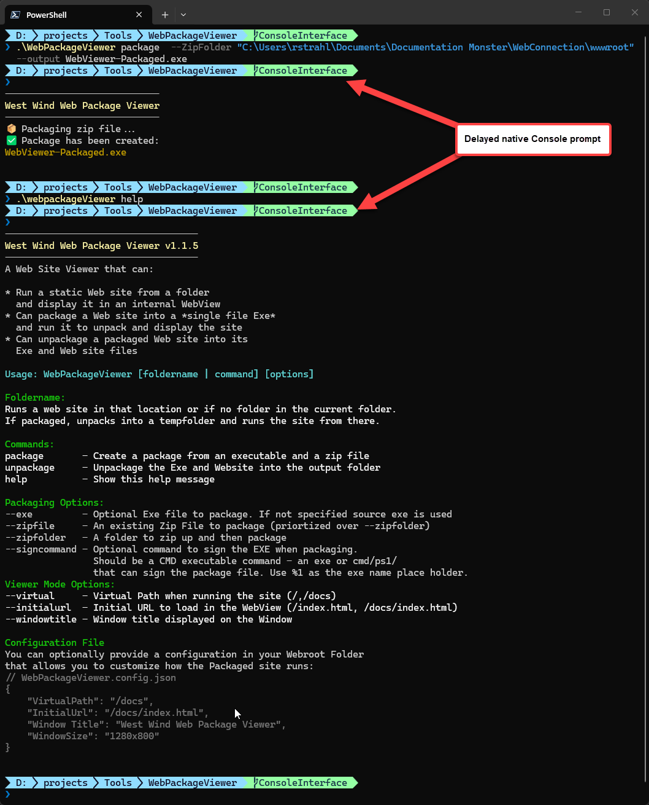
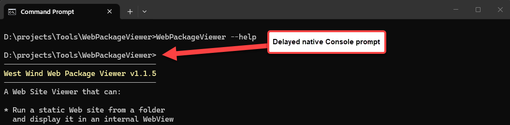

Creating a Windows GUI App that also Doubles as a CLI App

In my last post I described a WebPackageViewer tool tool that acts as a static Web site packager and self-contained Web site viewer all contained in a single Executable.
One feature of this single file tool is that it acts both as a GUI application (the Web site viewer) and as a CLI application (the package/unpackage tooling) from a single EXE. However, using both GUI and CLI interface from a single EXE is challenging and doesn't have a 100% clean solution. In this post I'll describe several options that make this work with an as clean as possible approach as well as some alternatives that I've used in other applications.
If you think this is an off the wall concept, all of my commercial desktop applications Markdown Monster, WebSurge and Documentation Monster have a support CLI for exposing common functionality in a scriptable way. But... in all of these latter cases I actually chose a different approach of using separate EXEs for the GUI app and CLI app with the CLI app driving the GUI app features. It's a very different use case than the simple single Exe WebPackager tool and it works well for full fledged applications that expose a CLI.
I'll also cover that approach in some detail.
##AD##
CLI Interfaces
So in this post I'll discuss 4 different approaches. None of them are what I would consider perfect, which would be if Windows simply supported some way to cleanly service both GUI and Console apps from a single Exe.
But alas, it's Windows so we have to live with the trade-offs:
- Create a GUI application with a Console interface
- Create a Console Application and launch GUI from Console
- Create separate CLI and GUI applications with shared functionality
I've used all of these approaches now at some point or another, and it depends on the type of application or tool that you're building which makes most sense.
GUI Application with CLI Interface Option
Mixed mode GUI app that also supports CLI output is the most tricky of these approaches, because Windows makes this sort of thing difficult with choose-one-or-the-other situation.
When you build a Windows .NET application (or any Windows application for that matter) you get to specify whether it's a WinExe (GUI) or Exe (Console) application. The type of app is written into the PE header when the EXE is created.
In .NET you can specify this in the project's header:
<Project Sdk="Microsoft.NET.Sdk">
<PropertyGroup>
<!-- Windows GUI app - Exe for Console -->
<OutputType>WinExe</OutputType>
<TargetFramework>net472</TargetFramework>
<UseWPF>true</UseWPF>
<Version>1.1.5.2</Version>
This affects SubSystem value of the Windows PE header that gets generated into Windows Exes:

Figure 1 - GUI and Console apps have different startup semantics in how they related to Consoles that are attached or loaded based on the SubSystem value in the PE header.When you launch a Console application a new Console is started if none is active. That's when you invoke via the Windows shell or Explorer. If launched from an existing Console in the Terminal the Console app attaches to the existing Console and pipes output into it including all the Console streams (Input/Output/Error).
When you launch a GUI app no Console is launched so by default there's no Console - the Console points at a null console if you write to it and that output goes nowhere.
Where it gets weird is if you launch a GUI app from a Console and you then write to the console which is the exact scenario that I'm using in WebPackageViewer.
By default the launching Console and the GUI exe are not connected. However, it's possible to attach to an existing Console using a native AttachConsole() call from a GUI application when the application starts up, which effectively allows your GUI application to send Console output and input to and from the console.
You can use the following two P/Invoke calls (on Windows) to attach and release the Console:
[DllImport("kernel32.dll", SetLastError = true)]
static extern bool FreeConsole();
[DllImport("kernel32.dll", SetLastError = true)]
static extern bool AttachConsole(int dwProcessId);
Then as part of your application's startup code you can attach the Console:
protected override void OnStartup(StartupEventArgs e)
{
bool attached = AttachConsole(-1);
...
if (attached)
Console.Write("\n✅ Launching Web Viewer...");
...
// when done
if(attached)
FreeConsole();
This sorta works.
The problem is that Console output goes into the active console that the application was started from, but if the application runs for any sort of duration, the console output gets mixed up with the existing prompt:

Figure 2 - Console Fail - In a GUI Application you can attach to a console, but the output gets very janky and the Console doesn't always return to the prompt after completion
The reason for this is that a console launched GUI application returns almost immediately to the console while the GUI app continues running in the background. The end result is that you get a new prompt that appears to be mixed into your Console output.
Depending on where the prompt occurs, it looks like the existing console's prompt is now overwriting your content but really the prompt is left behind while your output continued into no-man's land.
Furthermore, once the native prompt has completed if you call FreeConsole() the console has now lost the prompt and essentially hangs until you press a key. While it looks like the prompt is lost what's really happening is that the cursor appears to be at the end, of the output, but the actual prompt is the prompt above in the middle of the Console output.
Yeah, it's bloody mess!
To fix this somewhat we can use a helper to release the console rather than just calling FreeConsole():
[DllImport("user32.dll")] static extern void keybd_event(byte bVk, byte bScan, uint dwFlags, nuint dwExtraInfo);
const byte VK_RETURN = 0x0D;
static void ReleaseConsolePrompt()
{
Console.WriteLine(); // force another line break so that the prompt is on a new line
FreeConsole();
// force a CR into the console
keybd_event(VK_RETURN, 0, 0, 0); // key down
keybd_event(VK_RETURN, 0, 0x0002, 0); // key up (KEYEVENTF_KEYUP)
}
which ends up showing a new prompt at the bottom with the cursor at the active new prompt!
Can you live with it?
In a pinch, this sort of funky output works for internal applications where you have a very short output, but for a commercial tool or something that has a lot of output that takes a bit to run, that's not really an option as it just looks like shit.
What's annoying is that the behavior of the prompt can vary. I can run the same command multiple times and sometimes it'll get interrupted by the prompt, sometimes not. If your app's CLI commands run very fast within a few milliseconds you can preempt the console prompt interference. If it's very slow you can be sure it'll show up in an unexpected location.
For some applications that only occasionally use the CLI or that are driven via automation this may not matter and is acceptable. It's the easiest path of providing a CLI interface to a GUI application and may just be Good Enough.
Hackery!
For slight performance trade off you can make this a little better by essentially forcing the Console to show the new prompt immediately. The idea is that you preemptively force the Console to show a new prompt so it doesn't overwrite your Console output in the middle of your content.
So in WebPackageViewer I essentially do this:
protected override void OnStartup(StartupEventArgs e)
{
IsConsoleApp = AttachConsole(-1);
if (IsConsoleApp)
{
// delay slightly to let existing prompt finish and then show our prompt
System.Threading.Thread.Sleep(20);
// Insert a line to clear the > prompt
Console.WriteLine();
}
Here's what that looks like in PowerShell with a custom OhMyPosh prompt:

Figure 3 - A GUI app with Console output that delays slightly to force the completing existing Console prompt to display immediately, which avoids overwriting our Console output.Here's what it looks like in a plain Command prompt:

Figure 4 - Plain Command Prompt with the same delayed Console display.
If you look close you see the original Console prompt finish, and then our actual Console output is displayed. I added an extra Console.WriteLine() into the code to skip down over the prompt line (>).
Is that perfect? No, but it looks a lot cleaner than having the prompt injected in the middle or weird line breaks showing up in your Console output. While we still can't avoid the extra prompt, at least now it's in a predictable location at the very top where it's not interfering with our Console content. And if you don't pay close attention you may not even notice that it's happening... 😉
If you want to see this all working together you can take a look in App.xaml.cs in the WebPackageViewer project.
Is Console Interface Important?
When building CLI tools, the use case is often about automation. For many CLI tools actual Console interaction may be rare anyway because the primary use case is automation.
For example, in Documentation Monster (a desktop application) I automate the packager from the application. I generate the Html Output in the application, package up the files explicitly into a Zip file, then use the packager to package the single file Exe. I'm using the CLI but I'm not ever actually looking at the Console.
In the end having a Console that doesn't behave 100% correctly may not be a big deal, especially when you can get it close enough as described above.
When to use this
If the primary application you are creating is a GUI app and the CLI functionality is secondary, then this approach can work very well for you.
For my use case in WebPackageViewer I used this approach as it was the best choice for this utility for the following reasons:
- I absolutely need a single Executable
- The GUI interface is the primary feature users see
- The CLI interface is likely automated and not actually visibly running from the command line
- The CLI is output works well enough with the embellishments described in this post
This integration ticks all of these points and the only real downside is the slightly messy CLI interface with the duplicated prompt line. I can live with that!
Console Application that hosts a GUI Interface
As I've described above it's possible to create a GUI app that can interact with the Console, but you can also create the reverse: A Console application that can run a GUI application.
This might seem counter-intuitive and most likely this will come up after you've decided to build the entire application as a GUI app - as it did for me!
Realistically though the differences between a Windows GUI and Console application are relatively minor from an implementation perspective. It comes down to specifying the Windows Subsystem used during build time.
For .NET projects this means <OutputType>Exe</OutputType>. This here is from the WebPackageViewer which deliberately builds a .NET Framework Executable to remove any runtime requirements:
<Project Sdk="Microsoft.NET.Sdk">
<PropertyGroup>
<!-- Exe: Console - WinExe: GUI -->
<OutputType>Exe</OutputType>
<TargetFramework>net472</TargetFramework>
<UseWPF>true</UseWPF>
...
</PropertyGroup>
</Project>
If you're using ILMerge or ILRepack to package a single file binary, the final EXE and its PE Header is actually determined by those tools not your project. In ILRepack this is the
/target:exeor/target:winexeparameter. This means if you use these tools, it doesn't matter what you set for<OutputType>in the .NET project as the assignment overrides that value in ILMerge/ILRepack scripting!
The other thing that has to change is that a Console application has to start with a static int Main() method, so you have to explicitly add this to your application, in this case for a WPF application:
using System;
using System.IO;
using System.Runtime.InteropServices;
using WebPackageViewer;
class Program
{
[STAThread]
static int Main(string[] args)
{
var app = new App();
app.InitializeComponent();
app.Run();
return 0;
}
}
and you should explicitly specify that in the .csproj file:
<Project Sdk="Microsoft.NET.Sdk">
<PropertyGroup>
<StartupObject>Program</StartupObject>
</PropertyGroup>
</Project>
Incidentally this also works for GUI mode applications and in fact I launch all of my GUI apps this way as I generally have a few startup checks that I include before the app actually gets launched. Also a great location for a launch screen that pops quicker here than once the WPF, WinForms or WinUi frameworks start up.
If you go this route, you don't need to AttachConsole() and FreeConsole(). Any Console commands work as you'd expect including having all the Console Streams hooked up as you'd expect.
What's the Downside of a Console GUI Application?
Unfortunately, there is one downside to a Console application that doubles as a GUI application: A Console compiled application always displays a Console window and there's no good way to completely hide the window when the app starts up.
You can hide the Console window immediately after startup using code like this:
class Program
{
[STAThread]
static int Main(string[] args)
{
if (!StartedFromConsole())
{
// hide the Console window immediately
ShowWindow(GetConsoleWindow(), 0); // hide console flash
}
var app = new App();
app.InitializeComponent();
app.Run();
return 0;
}
[DllImport("kernel32.dll", SetLastError = true)]
static extern bool AttachConsole(int dwProcessId);
[DllImport("kernel32.dll")]
static extern bool FreeConsole();
[DllImport("kernel32.dll")] static extern IntPtr GetConsoleWindow();
[DllImport("user32.dll")] static extern bool ShowWindow(IntPtr h, int cmd);
static bool StartedFromConsole()
{
if (AttachConsole(-1))
{
FreeConsole();
return true;
}
// Already attached to a console also means console-launched.
return Marshal.GetLastWin32Error() == 5;
}
}
But even with this code at the very earliest possible point of .NET code entry, you'll get a brief flash or worse a fadeout animation of the Console Window.
The code above is also a bit simplistic as it universally hides the Console window. In reality you want to hide it selectively only when you're actually going to display UI, and leave it when you're working with the Console, which may cause you to delay the hiding a little bit longer yet, making the window flash even more pronounced.
In WebPackageViewer when I was experimenting with this, I ended up sticking the window hiding right before the Main Window of the Viewer is created:
// code in OnStartup that handles CommandLine Parsing and execution
// and UI operations
// check and hide only before actual GUI operation
if (!StartedFromConsole())
{
// hide the Console window immediately
ShowWindow(GetConsoleWindow(), 0); // hide console flash
}
MainWindow mainWindow = new MainWindow(config);
mainWindow.Show();
But even that may not be quite the right behavior because if you actually launch the UI application from the Console explicitly via keyboard, then you'd want the Console to stay active. There's no easy way to determine whether the Console was created by your application or an existing console.
When to use this
Functionally, a Console application with a GUI interface ticks all the boxes and gives you the best of both Console and GUI applications, except for the initial Console Window popup.
If you can live with the Console popup and it isn't a distraction to you, or if your app is primarily a Console interface, then using a Console app is the way to go.
But for me personal, I find the brief Console popup annoying and unprofessional for a GUI app, so other than for applications that are entirely CLI driven I would probably not opt for this choice.
Separate CLI Application
Another option for creating both a GUI and Console interface is to create two completely separate applications. As I've shown above both GUI app with CLI and CLI with GUI apps have some quirks that make them behave not quite right for the CLI or UI scenario.
By separating out the GUI and CLI into completely separate applications you can avoid any of these ambiguities by giving each it's dedicated target Subsystem type.
This works particularly well if your CLI interface is fairly sophisticated and requires the full Console experience including the ability to be driven to Console IO.
I'm using this type of two separate EXE interface in Markdown Monster, WebSurge and Documentation Monster and it's a relatively simple setup in that the CLI project can simply import the GUI project (or 'business' project) as a reference and get all of the same functionality as the main GUI app.
So, using the Markdown Monster CLI Example I have two projects:
- MarkdownMonster
- mmcli
mmcli references MarkdownMonster which is a single assembly monolith to use all of the built in operational logic to handle many system operations related to installation, generate html and pdf output, start and stop the internal Web server and so on. Operations here can be anything that you want to expose on the command line.
In the past I've always created a separate executable that links in the main applications' interfaces and then uses that functionality to drive the CLI.
I did this primarily because I didn't know any better having tried running both a CLI interface and GUI interface from the same WinExe style SDK project application, which produces a Windows Application (more on that in a minute).
Separating out the CLI into a separate 'command' Executable is not necessarily a bad idea. If you have a sufficiently sophisticated CLI with many operations it might make perfect sense to have a separate executable to drive that CLI.
Summary
GUI App with Console Interaction
- use for UI primary application (ie. a Viewer)
- easy to build
AttachConsole()andFreeConsole()- CLI is least desirable but works for 'quick and dirty use'
Console Application that Launches a GUI
- use for Console centric applications that also have UI
- requires
program.cslaunch for GUI (ie. a little non-standard) - easy to build but need to isolate GUI from Console commandlines
- for GUI apps shows or at least flashes the Terminal Window
Separate GUI and CLI Application
- two Separate Exes
- no 'routing' required
- Separates concerns
- CLI can link in GUI app or library features
- no UI oddities for either GUI and CLI